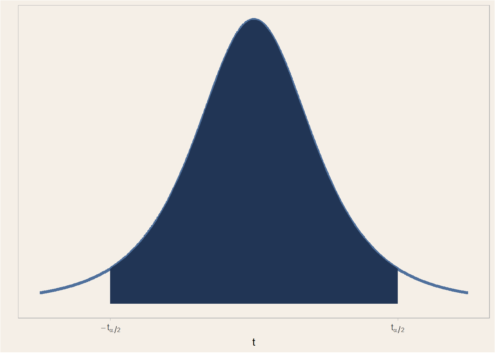

11.3 Estimación por Intervalos.
Una estimación por intervalo de un parámetro \(\theta\) es un intervalo de la forma \(\hat{\theta}_L < \theta < \hat{\theta}_U\), donde \(\hat{\theta}_L\) y \(\hat{\theta}_U\) dependen del valor del estadístico \(\hat{\Theta}\) para una muestra específica, y también de la distribución de muestreo de \(\hat{\Theta}\).
- Al intervalo \(\hat{\theta}_L < \theta < \hat{\theta}_U\) se le llama intervalo de confinaza, y su longitud es un indicador de la precisión de una estimación puntual.
- Los valores \(\hat{\theta}_L\) y \(\hat{\theta}_U\) son estimadores de las variables aleatorias \(\hat{\Theta}_L\) \(\hat{\Theta}_U\).
El razonamiento de la construcción de intervalos de confianza es utilizar la distriobución muesral de \(\hat{\Theta}\) para determinar los límites del intervalo de tal manera que:
\[P(\hat{\Theta}_L < \theta < \hat{\Theta}_U) = 1 - \alpha, \quad 0 < \alpha < 1\]
y decimos que hay una probabilidad de \(1 - \alpha\) de que el intervalo contenga a \(\theta\).
- El intervalo nos permite tener una confianza de \(100(1 - \alpha)\)%.
- El grado de confianza es \(1-\alpha\).
El teorema del límite central se hace muy importante para la construcción de estadísticos cuya ley de probabilidad es conocida.

Una muestra, varianza conocida.
Cuando 14 estudiantes de segundo año de medicina del Bellevue Hospital midieron la presión sanguínea de la misma persona, obtuvieron los resultados que se listan abajo. Suponiendo que se sabe que la desviación estándar poblacional es de \(10\) mmHg, construya un estimado de un intervalo de confianza del 95% de la media poblacional. De manera ideal, ¿cuál debe ser el intervalo de confianza en esta situación?
Una manera de construir un estadístico es estableciendo una expresión que nos diga cuanto se desvía nuestro estimador del valor real:
\[\hat{x} - \mu = 133.93 - \mu\]
La media se calcula usando mean(pressure).
\[\hat{x} - \mu = 133.93 - \mu \rightarrow \frac{\hat{x} - \mu}{\sigma/\sqrt{n}} = \frac{133.93 - \mu}{10 / \sqrt{14}} \sim N(0, 1)\]
Entonces podemos construir un intervalo de confianza del 95% (esto indica que \(0{,}95 = 1 - \alpha\), por lo que \(\alpha = 0{,}05\)) como:
\[ \begin{aligned} P(-z_{\alpha/2} < Z < z_{\alpha/2}) &= P\left(-z_{\alpha/2} < \frac{133.93 - \mu}{10 / \sqrt{14}} < z_{\alpha/2}\right) = 0{,}95 \\ &= P\left(-z_{\alpha/2}\frac{10}{\sqrt{14}} < 133.93 - \mu < z_{\alpha/2}\frac{10}{\sqrt{14}}\right) = 0{,}95 \\ &= P\left(-133.93 - z_{\alpha/2}\frac{10}{\sqrt{14}} < - \mu < -133.93 + z_{\alpha/2}\frac{10}{\sqrt{14}}\right) = 0{,}95 \\ &= P\left(133.93 - z_{\alpha/2}\frac{10}{\sqrt{14}} < \mu < 133.93 + z_{\alpha/2}\frac{10}{\sqrt{14}}\right) = 0{,}95 \\ \end{aligned} \]
Una muestra, varianza conocida.
Tal que el intervalo es:
\[133.93 - z_{\alpha/2}\frac{10}{\sqrt{14}} < \mu < 133.93 + z_{\alpha/2}\frac{10}{\sqrt{14}}\]
Como \(\alpha=0{,}05\), entonces \(\alpha/2=0{,}025\), y se puede saber el valor del estadístico asociado a este cuantil usando una tabla de distribución normal, o usando qnorm(.025, 0, 1). En este caso, \(z_{\alpha/2} = -1.96\):
\[139.17 \text{ mmHg} < \mu < 128.69 \text{ mmHg}\]
¿Cómo sé que mis datos son normales?
Se calculan los residuales de la muestra: \(\varepsilon_i = X_i - \bar{X}\) para \(i=1, 2, \ldots, n\)
res <- pressure - mean(pressure)
# Grafico Cuantil-Cuantil
ggplot(NULL, aes(sample=res)) +
stat_qq() +
stat_qq_line(colour="#213555", size=1.5) +
theme_light() +
theme(
panel.background=element_rect(fill="#F5EFE7"),
plot.background=element_rect(fill="#F5EFE7")
)Una muestra, varianza desconocida.
Control del plomo en el aire. A continuación se listan las cantidades de plomo medidas (en microgramos por metro cúbico o \(\mu g\) \({m}^{-3}\)) en el aire. La Environmental Protection Agency estableció un estándar de calidad del aire para el plomo de \(1{,}5\) \(\mu g\) \({m}^{-3}\). Las medidas que se presentan abajo se registraron en el edificio 5 del World Trade Center en diferentes días, inmediatamente después de la destrucción causada por los ataques terroristas del 11 de septiembre de 2001. Después del colapso de los dos edificios hubo una gran preocupación por la calidad del aire. Utilice los valores dados para construir un estimado del intervalo de confianza del 95% para la cantidad media de plomo en el aire. ¿Hay algo en este conjunto de datos que sugiera que el intervalo de confianza tal vez no sea muy bueno? Explique.
Al igual que antes:
\[\hat{x} - \mu = 1.54 - \mu\]
Esta diferencia la debemos entandarizar usando la desviacion típica:
\[\hat{x} - \mu = 1.54 - \mu \rightarrow \frac{\hat{x} - \mu}{S/\sqrt{n}} = \frac{1.54 - \mu}{1.914 / \sqrt{6}} \sim t(n - 1)\]
La desviación estándar se calcula usando sd(air_quality).
Entonces podemos construir un intervalo de confianza del 95% (esto indica que \(0{,}95 = 1 - \alpha\), por lo que \(\alpha = 0{,}05\)) como:
\[ \begin{aligned} P(-t_{\alpha/2, n - 1} < T < t_{\alpha/2, n - 1}) &= P\left(-t_{\alpha/2, n - 1} < \frac{1.54 - \mu}{1.914 / \sqrt{6}} < t_{\alpha/2, n - 1}\right) = 0{,}95 \\ &= P\left(-t_{\alpha/2, n - 1}\frac{1.914}{\sqrt{6}} < 1.54 - \mu < t_{\alpha/2, n - 1}\frac{1.914}{\sqrt{6}}\right) = 0{,}95 \\ &= P\left(-133.93 - t_{\alpha/2, n - 1}\frac{1.914}{\sqrt{6}} < - \mu < -1.54 + t_{\alpha/2, n - 1}\frac{1.914}{\sqrt{6}}\right) = 0{,}95 \\ &= P\left(1.54 - t_{\alpha/2, n - 1}\frac{1.914}{\sqrt{6}} < \mu < 1.54 + t_{\alpha/2, n - 1}\frac{1.914}{\sqrt{6}}\right) = 0{,}95 \\ \end{aligned} \]
Y el intervalo es:
\[1.54 - t_{\alpha/2, n - 1}\frac{1.914}{\sqrt{6}} < \mu < 1.54 + t_{\alpha/2, n - 1}\frac{1.914}{\sqrt{6}}\]
Como \(\alpha=0{,}05\), entonces \(\alpha/2=0{,}025\), y se puede saber el valor del estadístico asociado a este cuantil usando una tabla de distribución \(t\)-Student con \(n - 1\) grados de libertad, o usando qt(.025, 5). En este caso, \(t_{\alpha/2, 5} = -2.5706\):
\[3.55 \mu\text{g m}^{-3} < \mu < -0.47 \mu\text{g m}^{-3}\]
Proporciones
\[\frac{\hat{p} - \pi}{\sqrt{\hat{p}(1 - \hat{p})}} \sim N(0, 1)\]
Diferencia de proporciones
\[\frac{(\hat{p}_1 - \hat{p}_2) - \Delta}{\sqrt{\hat{p}_1(1 - \hat{p}_1)/n_1 + \hat{p}_2(1 - \hat{p}_2)/n_2}} \sim N(0, 1)\]
Diferencia de medias, varianzas conocidas
\[\frac{(\bar{x}_1 - \bar{x}_2) - (\mu_1 - \mu_2)}{\sqrt{\sigma_1^2/n_1 + \sigma_2^2/n_2}} \sim N(0, 1)\]
\[P(-z_{\alpha/2} < Z < z_{\alpha/2})= 1 - \alpha\]

Diferencia de medias, varianzas desconocidas iguales
Se usa el estimado puntual de la varianza agrupada (pooled): \(S_{pool}^2 = \frac{(n_1 - 1)S_1^2 + (n_2 - 1)S_2^2}{n_1 + n_2 - 2}\), de forma que:
\[\frac{(\bar{x}_1 - \bar{x}_2) - (\mu_1 - \mu_2)}{S_{pool}\sqrt{1/n_1 + 1/n_2}} \sim t(n_1 + n_2 - 2)\]
\[P(-t_{\alpha/2, n - 1} < T < t_{\alpha/2, n - 1}) = 1 - \alpha\]
Diferencia de medias, varianzas desconocidas distintas
En este caso, se usa una expresión un tanto más complicada para los grados de libertad:
\[\frac{(\bar{x}_1 - \bar{x}_2) - (\mu_1 - \mu_2)}{\sqrt{S_1^2/n_1 + S_2^2/n_2}} \sim t(\nu), \quad \nu=\frac{(S_1^2/n_1 + S_2^2/n_2)}{[(S_1^2/n_1)^2/(n_1 - 1) + (S_2^2/n_2)^2/(n_2 - 1)]}\]
Estimación de la varianza: varianza poblacional conocida
En un estudio de los efectos sobre los bebés que tiene el consumo de cocaína durante el embarazo, se obtuvieron los siguientes datos muestrales de pesos al nacer: \(n=190\), \(\bar{x} = 2700\) g, \(S = 645\) g (según datos de Cognitive Outcomes of Preschool Children with Prenatal Cocaine Exposure, de Singer et al., Journal of American Medical Association, vol. 291, núm. 20). Utilice los datos muestrales para construir un estimado del intervalo de confianza del 95% para la desviación estándar de todos los pesos al nacer de hijos de madres que consumieron cocaína durante el embarazo. Con base en el resultado, ¿parece que la desviación estándar difiere de la desviación estándar de \(696\) g de los pesos al nacer de hijos de madres que no consumieron cocaína durante el embarazo?
Estimación de la varianza: varianza poblacional conocida
Se usan proporciones para realizar las estimaciones:
\[\frac{(n-1)S^2}{\sigma^2} \sim \chi^2_{n-1} \rightarrow P(\chi^2_{1 - \alpha/2, n-1} < X^2 < \chi^2_{\alpha/2, n-1}) = 1 - \alpha\]
Estimación de la varianza: varianza poblacional conocida
Se usan proporciones para realizar las estimaciones:
\[\frac{(n-1)S^2}{\sigma^2} \sim \chi^2_{n-1} \rightarrow P(\chi^2_{\alpha/2, n-1} < X^2 < \chi^2_{1 - \alpha/2, n-1}) = 1 - \alpha\]
Entonces podemos construir un intervalo de confianza del 95% (esto indica que \(0{,}95 = 1 - \alpha\), por lo que \(\alpha = 0{,}05\)) como:
\[ \begin{aligned} P(\chi^2_{\alpha/2, n-1} < X^2 < \chi^2_{1 - \alpha/2, n-1}) &= P\left(\chi^2_{\alpha/2, n-1} < \frac{(189)(645\text{ g})^2}{\sigma^2} < \chi^2_{1 - \alpha/2, n-1}\right) = 0{,}95 \\ &= P\left(\frac{1}{\chi^2_{1 - \alpha/2, n-1}} < \frac{\sigma^2}{(189)(645\text{ g})^2} < \frac{1}{\chi^2_{\alpha/2, n-1}}\right) = 0{,}95 \\ &= P\left(\frac{(189)(645\text{ g})^2}{\chi^2_{1 - \alpha/2, n-1}} < \sigma^2 < \frac{(189)(645\text{ g})^2}{\chi^2_{\alpha/2, n-1}}\right) = 0{,}95 \end{aligned} \]
Y el intervalo es:
\[\frac{(189)(645\text{ g})^2}{\chi^2_{1 - \alpha/2, n-1}} < \sigma^2 < \frac{(189)(645\text{ g})^2}{\chi^2_{\alpha/2, n-1}}\]
Como \(\alpha=0{,}05\), entonces \(\alpha/2=0{,}025\), y se puede saber el valor del estadístico asociado a este cuantil usando una tabla de distribución chi-cuadrado, o usando qchisq(.025, 189). En este caso, \(\chi^2_{\alpha/2, n-1} = 152.82\):
\[3.4341145\times 10^{5} < \sigma^2 < 5.1451145\times 10^{5}\]
De forma que el intervalo para la desviación estándar es:
\[586.01 \text{ g} < \sigma < 717.29 \text{ g}\]
Estimación de la proporción de dos varianza
Se ha realizado un estudio sobre la velocidad en vuelo de diversas especies de pájaros. El propósito era comparar las velocidades del pelícano pardo y el ostrero americano. Se cronometró una muestra de \(9\) pajaros pardos y \(12\) pajaros ostreros, volando con el viento de costado con una velocidad de viento de \(5\) a \(8\) millas h\({}^{-1}\), y se obtuvo que el pájaro pardo vuela, en promedio, a \(26{,}05 \pm 6{,}34\) millas h\({}^{-1}\), y el ostrero a \(30{,}19 \pm 3{,}20\) millas h\({}^{-1}\). Construya un intervalo de confianza del 95% para la proporción de varianzas.
Al igual que antes, usamos la proporción entre las varianzas para construir un estadístico a partir del cual derivar nuestra ley de probabilidad:
\[\frac{\sigma_2^2 S_1^2}{\sigma_1^2 S_2^2} = \frac{(6{,}34)^2\sigma_2^2}{(3{,}20)^2\sigma_1^2} \sim F(n_1 - 1, n_2 - 1) \rightarrow P(f_{1 - \alpha/2, n_1-1, n_2-1} < F < f_{\alpha/2, n_1-1, n_2-1})\]
Entonces podemos construir un intervalo de confianza del 90% (esto indica que \(0{,}90 = 1 - \alpha\), por lo que \(\alpha = 0{,}1\)) como:
\[ \begin{aligned} P(f_{\alpha/2, \nu_1, \nu_2} < F < f_{1 - \alpha/2, \nu_1, \nu_2}) &= P\left(f_{\alpha/2, \nu_1, \nu_2} < \frac{(6{,}34)^2\sigma_2^2}{(3{,}20)^2\sigma_1^2} < f_{1 - \alpha/2, \nu_1, \nu_2}\right) = 0{,}90 \\ &= P\left(f_{\alpha/2, \nu_1, \nu_2}\frac{(3{,}20)^2}{(6{,}34)^2} < \frac{\sigma_2^2}{\sigma_1^2} < f_{1 - \alpha/2, \nu_1, \nu_2}\frac{(3{,}20)^2}{(6{,}34)^2}\right) = 0{,}90 \\ &= P\left(\frac{1}{f_{1 - \alpha/2, \nu_1, \nu_2}}\frac{(6{,}34)^2}{(3{,}20)^2} < \frac{\sigma_1^2}{\sigma_2^2} < \frac{1}{f_{\alpha/2, \nu_1, \nu_2}}\frac{(6{,}34)^2}{(3{,}20)^2}\right) = 0{,}90 \end{aligned} \]
Y el intervalo es:
\[\frac{1}{f_{\alpha/2, n_1-1, n_2-1}}\frac{(6{,}34)^2}{(3{,}20)^2} < \frac{\sigma_1^2}{\sigma_2^2} < \frac{1}{f_{1 - \alpha/2, n_1-1, n_2-1}}\frac{(6{,}34)^2}{(3{,}20)^2}\]
Como \(\alpha=0{,}1\), entonces \(\alpha/2=0{,}05\), y se puede saber el valor del estadístico asociado a este cuantil usando una tabla de distribución \(F\), o usando qf(.05, 8, 11):
\[1.33 < \frac{\sigma_1^2}{\sigma_2^2} < 13\]